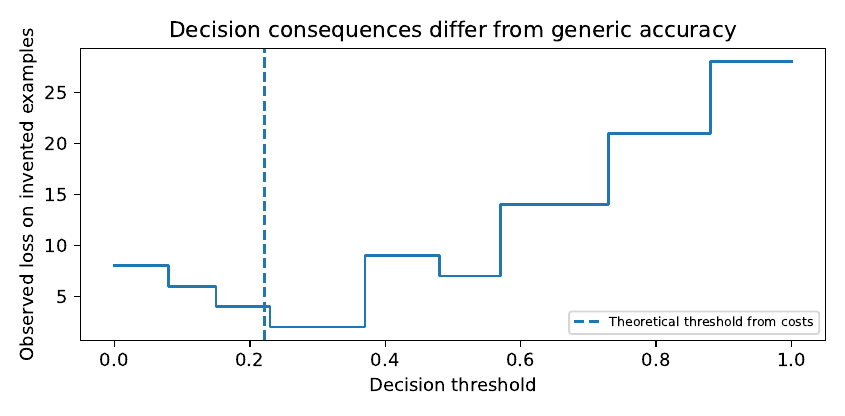

Machine Learning and AI That Earn Their Place
When should a learnt model replace a simpler rule? The answer is not “when its accuracy is higher” without qualifications. We develop statistical learning, honest evaluation, probability calibration, decision-sensitive comparison, distribution shift and retrieval-based language assistance. The central test is whether added complexity produces a useful, defensible improvement.
Start with what the system must decide
A programme manager may be offered an AI system that predicts medicine shortages or daily pollution. The proposed system may require a computer, connectivity, software updates, labelled data and staff who know when to question its outputs. A simpler alternative may be a published threshold rule or a transparent forecast. It is not enough to ask which model has a lower reported error. We must ask what information each consumes, what failures it creates and whether the decision made with it is better than the decision made without it.
Let denote training observations, let be a prediction function and let be a loss. Empirical risk minimisation chooses
(6.1)
The first term measures fit to the observed sample, the second penalises complexity, and the parameter controls the trade-off. A good training score is not a statement about future performance. Generalisation requires a relationship between the training observations and the situations in which predictions will be used (Vapnik 1998; Hastie, Tibshirani, and Friedman 2009; Bishop 2006).
Training error can be misleading
Imagine a model that memorises the average PM value for each monitoring station. If the training and testing sets contain different hours from the same stations, its test performance may be impressive. Ask it to predict at a newly installed station, and its stored averages are useless. The problem is not simply “overfitting” in the narrow sense of memorising individual rows. The assessment tested a different task from the one the model was proposed to perform.
Similarly, an algorithm may learn the future through a feature that was recorded only after an event. Suppose the outcome is whether an electricity fault will occur by Friday, but one predictor is the repair ticket created on Saturday. The data table may make this predictor statistically powerful, but it is unavailable at the time of action. Leakage is therefore best defined relative to the actual information set available at decision time , not just a rule about columns named “target”.
A sensible evaluation begins with the simplest useful benchmark. For regression this may be a constant mean, persistence forecast, linear model or inverse-distance weighted estimate. For classification it may be a published rule or a constant prevalence-based probability. If a sophisticated model does not consistently beat these benchmarks on independent observations and a decision-relevant outcome, further complexity is difficult to justify.
Validation belongs inside the design
A model comparison requires data for fitting, data for choosing hyperparameters, and data that remain untouched until final assessment. It is acceptable to split by groups or time rather than by arbitrary rows. Every operation that learns from data, including normalisation, imputation, feature selection, threshold tuning and interval calibration, must be fitted on the appropriate training portion only. For spatial observations, station-blocked validation is critical; for repeated households, split by household; for forecast operations, preserve time order (Roberts 2017; Sculley 2015).
A common error is to report the best score among dozens of models tried repeatedly on the same test set. Once the test set has been used to select a model, it is no longer an independent final evaluation. A reproducible project documents the model-search procedure and reserves a final assessment that does not influence design. When the available dataset is too small to support all these divisions, be explicit about the uncertainty rather than claiming to have solved it.
From regression to trees, forests and boosted models
The simplest parametric predictor specifies a functional form, such as a linear relationship between rainfall, land use and an outcome. A decision tree instead partitions the predictor space and fits simple values in each region. A tree can discover threshold-like interactions, but a deep single tree is often unstable: a small change to the training data can substantially alter its branches.
Random forests train many randomised trees and average their predictions. Their appeal is variance reduction and flexibility, not a guarantee of correct extrapolation outside the training range (Breiman 2001). Gradient boosting builds an additive model in stages, each stage improving a chosen loss relative to the current predictor. Modern implementations can be powerful on structured data, but hyperparameter search, missing-value handling, calibration and feature leakage remain necessary concerns. Foundational accounts include Friedman (2001) and Chen and Guestrin (2016).
A generalised additive model takes an intermediate route:
where each is a smooth function and is an appropriate link. It can capture nonlinear associations while leaving a more inspectable decomposition than a large ensemble (Wood 2017). But inspectability is not causal identification: a smooth curve can still summarise a confounded relationship.
Prediction uncertainty and the limits of probability labels
A probability reported as is useful only if similar cases occur with the predicted frequency in the population where decisions are made. A classifier can rank patients or locations well while producing badly calibrated probabilities. Calibration can be assessed by grouping predictions and comparing mean forecast probabilities with observed event rates. Grouping is a visual approximation; sample size, uncertainty and the choice of bins matter.
Example. Suppose, in an explicitly illustrative holdout sample, a model assigns a probability near to 100 cases but only 60 cases experience the event. Its predictions are too confident in that group. A warning system using probabilities as if they were calibrated will misstate expected false-alarm and missed-event costs. Perfect ranking on that sample would not repair the problem. Probability calibration must be checked separately from discrimination (Guo et al. 2017).
Post-hoc calibration, such as a fitted logistic mapping or isotonic regression, must be trained on calibration data that were not used to fit the underlying model. Even then, calibration learned in one setting can fail after a change in the sensor network, weather distribution, reporting rules or population. Ovadia (2019) provides a systematic study of uncertainty under dataset shift. A trustworthy system should monitor change and have a procedure for withholding or qualifying outputs when its evaluation no longer applies.
The mathematical distinction between error and consequence
Consider a binary decision , where issues a warning and denotes an actual adverse event. Let false warnings cost and missed events cost , with zero loss for correct decisions. Given a calibrated event probability , the expected losses are
Choose a warning when . This reproduces the threshold derived in Chapter 4, but we now use it to compare algorithms. Two prediction systems should be assessed using the same predeclared consequences. The system with the lower average cross-entropy need not have the lower operating loss at a particular threshold, and the reverse can also occur.
Proposition. Let . If two calibrated predictors produce probabilities for a case and both lie on the same side of , they recommend the same action under this loss, even if their numerical probabilities differ. If they lie on opposite sides, they recommend different actions.
Proof. The decision rule depends only on the sign of , obtained by subtracting the two conditional expected losses. The result follows immediately. ◻
This seemingly modest fact has a practical implication. Improving accuracy on cases far from an action threshold may change a reported average metric without changing a single decision. Errors close to the threshold can be much more consequential. It is therefore sensible to examine the costs and calibration of decisions near the threshold, provided the threshold and costs themselves are defensible.
Selective prediction and human review
A model need not force a decision for every input. It can abstain and refer uncertain cases to a qualified person. Let denote deferral with cost ; compare that with the expected losses of automatic actions. The optimal decision among the three minimises . Real deferral is possible only if someone is available and capable of responding. A system that “refers” hundreds of warnings to one busy worker has moved its bottleneck rather than removed it.
Dataset shift, fairness and where the model stops working
A model trained in central Kampala may encounter different emission sources, road geometry, sensor types, weather patterns and building densities elsewhere. Formally the joint distribution may differ from . Under covariate shift, changes while stays constant; under concept shift, the conditional relationship changes. These definitions are useful distinctions, not conditions that can be verified from input covariates alone. If rural ground truth is unavailable, an observed change in is a warning, not a calibrated rural error estimate.
Subgroup evaluation matters because good average results may conceal poor performance for areas with fewer sensors, unreliable electricity or different conditions. Report subgroup sample sizes and uncertainty. Do not create an apparently precise fairness score from three observations. The appropriate protected or operational subgroups depend on the application; environmental risk may require separation by monitoring density, distance from training monitors and pollution regime rather than importing group labels that do not relate to the decision.
Complexity must be measured in the intended environment
Software cost includes training time, inference latency, memory, storage, electricity if measured, data acquisition, update requirements and the time skilled staff need to diagnose errors. For a device expected to operate during network outages, online server latency is only one dimension. A simple model that can be checked and rerun offline may be more useful than a complex model whose marginal accuracy improvement depends on a cloud service that is frequently unavailable.
A transparent comparison includes the number of variables, training observations, compute hardware, software versions, run repetitions and measurement procedure. If energy consumption is not metered or estimated through a validated tool, do not label a wall-clock time comparison as an energy study. The hidden costs of maintaining learnt systems are real engineering concerns, discussed in Sculley (2015) and Kleppmann (2017).
A worked comparison: adding learning complexity to air-quality prediction
Return to the PM problem in Chapter 4. Keep exactly the same held-out stations, time coverage, quality rules and outcome aggregation. Begin with a station-independent mean and inverse-distance weighting. Add a generalised additive model. Then consider random forests, boosted trees and residual kriging only when the necessary inputs exist. Each method must see the same permissible information, though methods may express that information differently.
Before training, write the protocol. The primary measure may be station-averaged MAE at withheld sites; secondary measures include RMSE, bias, interval coverage, distance-stratified error, prediction time and disk footprint. The preferred method should not be chosen solely by the smallest one-decimal-place improvement in RMSE, especially if it is slower, poorly calibrated or sensitive to missing covariates. Declare what size of improvement would actually change a planning decision.
When the outcome is a threshold exceedance, construct the warning decisions from each model’s probability or predictive distribution and compare expected decision losses. A regression point forecast that exceeds the threshold is not equivalent to a calibrated exceedance probability. The analysis should show both prediction and decision performance, keeping these claims separate.
Generative AI: a small public-service information system
The book should not introduce language models with an unconstrained chatbot that dispenses health, agricultural or legal instructions. A safer and more teachable case begins with a finite collection of official public documents and a narrow purpose: retrieve the correct paragraph that answers a known information question, or state clearly that the documents do not contain an answer.
Compare four approaches on a common set of questions: keyword retrieval; semantic retrieval; a language model that answers from retrieved passages; and a language model without access to the documents. The last approach helps reveal why retrieved evidence matters, not why one should deploy a source-free system. Questions must include deliberately unanswerable cases. Construct a source-verified answer key before evaluating any method. Track whether a citation actually supports the sentence it accompanies.
Retrieval-augmented generation can be represented schematically as , where is the user question, the vetted document collection, a retrieval rule, and a generator. Each arrow can fail. Retrieval may miss the correct document; the generator may misread an accurate passage; a source may be outdated; a fluent answer may combine unsupported details. It is a mistake to infer that attaching citations makes every sentence true.
Evaluation before deployment
For each question, store the approved source, whether an answer exists, the expected content and what an appropriate refusal or referral looks like. Count factual accuracy, source support, invalid citations, unsupported assertions, abstention for missing answers, latency and running cost. Assess questions in the languages and reading styles the service will actually encounter. A human review of the first deployment is necessary because an apparently high accuracy rate may conceal dangerous errors concentrated in unusual questions.
Documentation such as dataset descriptions and model cards makes these assumptions visible to users and later maintainers (Gebru 2021; Mitchell 2019). An explanation method such as a local surrogate can help an analyst inspect a prediction, but an appealing explanation does not itself guarantee that the model is fair, causal or reliable (Ribeiro, Singh, and Guestrin 2016).

The model audit the reader should be able to perform
A complete audit contains an intended-use statement, disallowed uses, training-data provenance, missing-data rules, leakage check, baseline, split method, uncertainty assessment, subgroup performance, compute cost, release version, update policy and incident pathway. The questions are not decorative compliance language. Each one corresponds to a failure that could change what an organisation should do. A model card written before a model has been evaluated is only a plan; it must not report imagined performance numbers.
The companion program illustrates threshold decisions with deliberately invented probabilities and outcomes. It computes false-positive and false-negative counts, expected loss and an abstention option. The programme makes no claim about measured medical or pollution outcomes. Its purpose is to let readers test the mathematical rule before adapting it to an approved real application.
Why high predictive accuracy can hide a harmful decision rule
Think of a programme that uses a model to choose which water pumps receive preventive maintenance. The model predicts the number of failures per pump, but the number of people affected depends strongly on the pump. Predicting one failure at a pump serving ten households and one failure at a pump serving five thousand households produces the same count error if either prediction is wrong. Yet missing the second failure may have much greater consequences. A model chosen purely for unweighted prediction accuracy may therefore direct attention to the wrong sites.
A decision-sensitive objective can include severity weights or, better, use a complete cost model. For actions , maintenance budget , maintenance costs and expected avoided disruption , a simple allocation is subject to . The predictive model enters through estimates of , which combine event probability and consequence. A programme with two independent models—one predicting failures and another estimating affected users—may still be unreliable if either target is measured badly.
This is the natural junction between learning and operations research. The mathematical comparison should not obscure values: the importance assigned to a school, a health centre or a remote community is an institutional or ethical choice. It should not be smuggled into a coefficient fitted from past service records.
An explicit example of a ranking and threshold disagreement
Consider four illustrative situations with true event outcomes . Model A predicts probabilities ; Model B predicts . Under a decision threshold of 0.5 with the convention triggers action, A warns for both events and no non-events. Model B warns for only the first event. But B assigns much higher probability to that first event and substantially lower probabilities to non-events. Depending on the score used, the models can be ranked differently. Neither model has a universal claim to superiority; the decision threshold, costs and calibration quality determine which differences matter.
More generally, a proper scoring rule evaluates the full probability forecast rather than just binary actions. Logarithmic loss for independent binary observations is
It strongly penalises confident mistakes. Brier loss averages . Both are useful for probability evaluation, but neither substitutes for specifying the costs of an actual warning decision (Gneiting and Raftery 2007). A model can have excellent average probability scores and still fail on the rare events a small institution most needs to anticipate.
Learning under rare events and small samples
When adverse outcomes are uncommon, a classifier can obtain high overall accuracy by predicting that nothing will happen. If 98 of 100 days have no breakdown, an always-negative classifier achieves 98% accuracy while detecting no breakdowns. Precision and recall expose different errors, but their interpretation depends on event prevalence, recording completeness and the proposed intervention. A model trained on reported incidents may learn which events get documented rather than which events occur.
Small samples create two additional risks. First, estimates for rare subgroups can be highly uncertain; second, a flexible model can find patterns that are accidental. Under small data conditions, a simple model with transparent uncertainty can be preferable to a large ensemble even when the latter has a slightly lower fitted error. Before building the larger model, ask whether obtaining a modest number of better-quality observations would do more for the decision than adding parameters. This is a value-of-information question.
A critical view of explanation tools
A feature-importance chart identifies relationships inside a fitted model, not necessarily causes in the world. If a transport-delay model relies on a district code, the code may proxy road quality, distance, reporting differences or management practices. Changing the code in software does not change the road or the institution. Local explanation methods can identify which features influenced the prediction in a neighbourhood of a particular input, but the meaning of such a neighbourhood can be questionable for strongly dependent or categorical variables (Ribeiro, Singh, and Guestrin 2016).
One reliable exercise is to compare model explanations with deliberately known data-generating structure in a synthetic example. A second exercise tests whether explanations are stable when correlated predictors are exchanged. Neither demonstrates that explanations will have causal meaning for an observational real dataset. Documenting uncertainty about explanations can be more responsible than presenting a visually tidy ranking of “drivers.”
A retrieval system should know what it does not know
Suppose a community information service indexes verified public pages about procedures for applying for a service. The correct answer to a question may depend on a particular regulation version. If the relevant document is absent, the system should refrain from inventing a procedure. We can assess this behaviour mathematically by introducing an abstention category. Let be answerable questions and unanswerable questions under the indexed corpus. Report accuracy on , abstention on , and the rate of unsupported answers separately. Overall accuracy may look high if the test contains very few unanswerable questions.
A useful test collection contains paraphrases, spelling variations and questions whose answers differ between old and current documents. The retrieval corpus should record document version and effective date. If a policy changes, storing both versions without distinguishing their valid periods can create apparently supported but outdated answers. The same provenance discipline introduced for datasets in Chapter 3 applies to text.
For multilingual use, literal translation is not enough. Speakers may use locally common terms, abbreviations and mixed languages. Evaluation should use questions that actual intended users can understand, with informed consent where user data are collected. A model that performs well on standard English may not be reliable when it receives a short Luganda phrase or local usage unfamiliar to its training corpus. Such a gap should be measured, not assumed away.
A model-selection decision record
When recommending a more complex model, write a short decision record explaining its measurable advantage over the baseline, its additional data requirements, costs, observed failure cases, expected maintenance burden and who will monitor it. Include the possibility of deciding not to deploy. The record should make it possible for a later researcher to see whether a genuine improvement was established or whether the team merely followed a technology trend.
If a model’s accuracy improves but its decision loss does not, report that as a result. If the apparent advantage disappears under station-blocked validation, the test design has revealed a problem before the system was entrusted with a service. If the model requires data the organisation cannot maintain, the design should be revised before deployment. This is how machine learning earns a place in engineering: by giving the organisation something it can use more reliably than its current alternative.
Extended case study: comparing learning systems on one decision
A useful evaluation should place every candidate method in the same operational situation. Imagine a municipality that considers issuing a temporary notice when predicted pollution exceeds a threshold. A conventional model produces a daily concentration forecast. A second model produces an exceedance probability from weather and traffic features. A third uses a nonlinear ensemble. Which one is useful? A fair comparison needs the same information cutoff, the same observed outcomes and a common loss structure. A lower test MAE does not by itself settle the question.
Begin with the no-model policy
A baseline need not be a statistical estimator. The current office might issue notices only when a monitor records a specified concentration. That policy may not cover unmonitored locations but is easy to inspect. Another baseline uses the last measured concentration. A third uses a historical seasonal mean. Record the actual rules and who follows them. A model that outperforms a constant predictor but offers no advantage over the policy already used has a weak deployment case.
The model’s information set is determined by the decision time. If notices must be issued by 7 a.m., the model may use observations and forecasts available before then. It may not use noon’s realised meteorological conditions. A retrospective dataset should preserve the timestamp at which each input became available, including data publication delays. Without this information, the evaluation may inadvertently permit future knowledge.
Compare probability forecasts, not merely labels
Suppose the three methods provide probabilities for events at site and day . Calibrate them on a validation period that does not overlap the final test. Then evaluate log loss or Brier score, observed calibration against predicted probability, and the action recommended by the stated cost threshold. A threshold chosen after seeing final test outcomes would not provide independent decision assessment.
For false-notice cost and missed-event cost , the expected per-case loss of action is . The model’s empirical decision loss is an average of observed costs on held-out cases, while conditional expected loss is computed from predicted probabilities. Agreement between these summaries is informative but not automatic. If event costs are uncertain, repeat the comparison across a plausible range rather than using a single arbitrary ratio.
Understand the cost of a false sense of certainty
Imagine the nonlinear model frequently predicts exceedance probabilities of 0.99 but is wrong in a meaningful fraction of those cases. A more cautious model may have slightly poorer ranking yet better calibrated probabilities. For a decision threshold near 0.9, the distinction can change many notices. A model should therefore be evaluated at the action thresholds its users will actually employ, not only through aggregate discrimination. This is particularly important when the outcome is rare and an unnecessary action has substantial cost.
A selective system with human review
Allow the model to abstain when its predictions are insufficiently supported. One possible rule is to refer cases whose predicted probability is close to the decision threshold. Another uses a validated uncertainty estimate. This can improve safety, but referral itself uses capacity. If a municipality has one analyst available for fifteen cases per day, the deferral policy must respect that workload. Otherwise the theoretical option is not feasible.
The analyst’s review can also be wrong. A rigorous evaluation of human-in-the-loop performance should document the information available to reviewers, their response time and the final action. A study of a model alone cannot establish the quality of a combined human-machine workflow. Deference to a human is not a magic error correction; it is an operational process requiring adequate staffing and accountability.
Model updating is a decision with its own risks
A model may lose accuracy when equipment changes, a major road opens or reporting practices are revised. A maintenance plan should specify which signals justify investigation, how new outcomes are collected and when retraining is permitted. Retraining every week can introduce instability; never retraining can allow persistent deterioration. A versioned evaluation pipeline should compare the old and new models on agreed reference cases and recent independently assessed observations.
A new model must not be promoted simply because it performs better on the sample used to develop it. In a small organisation, even a simple approval protocol can improve reliability: record the reason for the update, the validation results, a rollback plan and the person authorised to approve deployment. Model governance is one of the points at which rigorous methodology becomes practical engineering.
Extended generative-AI investigation: from a document to a supported answer
A language model can generate plausible text even when its source does not contain the answer. Consider a public-service document collection with eligibility rules, office hours, procedures and dates. A citizen asks, “Can I receive this service without travelling to the district office?” The system should identify the relevant source and either answer from it or acknowledge that the available documents do not establish the answer. It should not invent a telephone number or an online service merely because such facilities exist elsewhere.
Create a test set before trying models
Choose a small, verified collection of public documents that may be legally redistributed for teaching. Record each document’s title, issuing agency, effective date, location and source URL. Prepare 40 questions: perhaps 25 with directly supported answers, five requiring information from two documents, five whose answers are absent, and five designed to test an outdated source against a newer one. These proportions are illustrative; in a real study the test distribution should represent intended use as well as deliberately challenging cases.
The independent answer key should identify the exact passage supporting each answer, what must not be inferred, and when a referral is appropriate. Then compare the same questions across keyword search, semantic retrieval, a retrieval-augmented generator and an unsupported generator. The first three may all fail for different reasons: poor wording, mismatched embeddings, missing documents or unsupported synthesis. Reporting only the percentage of answers that sound reasonable is not enough.
Citation validity is not a cosmetic measure
A generated answer can display a real URL that does not contain the alleged fact. The evaluation should therefore verify proposition-level support. If a response contains three factual claims but the cited passage supports only two, count the unsupported claim. Distinguish an absent citation from an invalid citation and from a citation to an outdated but formerly correct document. The reader should be trained to inspect support, not merely the appearance of scholarly apparatus.
Another failure is over-answering. Suppose the document lists required identity documents but says nothing about processing times. A suitable answer might report the requirements and state that no processing time is specified. Adding an invented “typically three working days” can be more harmful than refusing that part of the question. A good system can supply a partially supported answer while clearly separating what remains unknown.
How to measure abstention
Let be the set of answerable test questions and the set of unanswerable ones. Calculate supported-answer accuracy on and the correct-abstention rate on . In addition, report the rate of unsupported factual claims among all answered questions. A system that abstains on every question achieves perfect avoidance of unsupported claims but provides no service, so answer coverage must be reported. A system that answers everything may maximise coverage while making unsupported assertions. The useful operating point depends on the consequences of misinformation and the possibility of human referral.
Local-language and low-bandwidth testing
A service intended for people using mixed English and local-language expressions should be evaluated with those expressions, not only with translated benchmark questions. Consent and privacy are necessary when real user utterances are collected. If the system relies on a remote server, test actual response time over the target network and identify what happens when connectivity fails. An offline keyword index with verified passages may be a better operational solution for a narrow service than a large cloud model. If a language model genuinely adds value, the evidence should show which questions benefit and what additional cost is incurred.
What the two investigations teach together
The pollution notice and the document question-answering service look technically different, but the evaluation problem is similar. Both require a clearly defined output, suitable ground truth, a simple baseline, independent evaluation, calibrated uncertainty or abstention, and a plan for error recovery. Both can be harmed by using data unavailable at the time of action. Both benefit from specifying where the system should not be trusted. The success of a learned model is therefore not its ability to produce output on every input; it is its ability to improve a defined human decision under demonstrable conditions.
Mathematical workshop: why a training score is not a guarantee
Suppose a team tries candidate prediction rules on a sample of independent observations, and each rule has a bounded loss in . For any fixed rule, Hoeffding’s inequality provides a simple concentration bound for its empirical average loss around its population risk :
A union bound over a fixed finite family of rules gives
Therefore, with probability at least , all the rules have deviations no larger than under these assumptions.
This inequality makes an important idea explicit. Choosing the lowest empirical loss among many candidates creates an opportunity to select a rule that benefited from chance. The bound grows with the logarithm of the candidate-family size. It does not imply that a complex model necessarily generalises badly; it illustrates why model selection and evaluation cannot be treated as independent when they use the same outcomes. It also does not apply without modification when observations are clustered, temporally dependent or adaptively reused to invent new candidates after examining results.
A worked numerical interpretation
Take , and . The bound is approximately . This is a loose theoretical upper bound on the largest deviation among the fixed candidate rules under the stated assumptions, not an estimate of actual forecast error. If the data contain only ten independent stations with many repeated readings, cannot be inserted as though all observations were independent for a new-station claim.
The practical lesson is not to replace validation with a theorem. It is to understand why the same dataset cannot be used indefinitely for trying choices and then advertised as an untouched confirmation. Separate data roles, grouped evaluation and transparent reporting are the empirical safeguards.
The Bayes decision depends on costs, not only probabilities
For a binary event with probability , false action cost and missed action cost , the Bayes rule chooses action 1 when . Algebra gives . This rule is optimal for the stated conditional losses if is the true conditional probability and no other constraints apply. Its reliability depends on calibration and on whether the cost assumptions capture real consequences.
If a model gives rather than , making the wrong decision is possible only when and lie on opposite sides of . This clarifies where probability accuracy is operationally critical. A small estimation error far from the threshold may not affect the action, whereas a small error near the threshold can reverse it. The importance of this observation is easily lost in a global average accuracy measure.
A second limitation arises when multiple actions share a budget. If a district can respond to only five of fifty alerts, an independent threshold rule may select more than five. The optimisation problem becomes choosing the set of actions with the greatest expected avoided loss subject to resource constraints. Good classification probabilities are then inputs to a constrained decision problem, as Chapter 5 developed.
A model can be predictable but not interpretable in the causal sense
Suppose past service delays are correlated with the number of staff on duty. A fitted model may conclude that delays are higher when more staff are present. One possibility is that extra staff are deployed on the busiest days. Predicting the delay from staffing and arrivals may still be useful, but interpreting the positive staffing coefficient as evidence that hiring causes delays would be false. To estimate the effect of staffing interventions, a causal comparison must address how staffing decisions were made and what other factors changed.
This distinction is central in a book about useful solutions. A municipality may need a good forecast of demand to plan the next day, and that forecast need not identify the causal effect of each covariate. But when the intervention itself changes the covariate distribution, a purely predictive model may no longer describe the new system. A successful prospective implementation should therefore be monitored for changes induced by the action.
Auditing the information available at the decision point
For each feature, write its source and the earliest time it is known. For an environmental alert issued at 7 a.m., yesterday’s verified sensor readings are available, but today’s midday observations are not. For medicine procurement placed on Monday, an inventory count recorded the preceding Friday may be available, but a Tuesday stock reconciliation is not. A feature table that lists availability times can identify leakage before fitting any model.
The audit should also ask whether deployment will provide each input at the same quality as the historical dataset. A research dataset may be carefully curated after the fact, while real-time systems face missing records, delayed updates and device failures. Training on retrospectively cleaned data without testing real-time missingness can produce optimistic results. A deployment evaluation should therefore replay information as it arrived, not as it appeared in a perfect archive months later.
When the right model is a rulebook rather than AI
Consider a service desk that must answer a finite set of approved procedural questions. If the approved answers are stable, a searchable rulebook may be more dependable and cheaper than a generative model. A language model may still help interpret varied wording or identify the relevant document, but that value should be demonstrated on realistic test questions. If every question requires authoritative approval before an answer is sent, the cost of the review workflow belongs in the comparison.
The strongest evaluation does not attempt to show that AI wins. It asks which method provides the needed result at acceptable risk and cost. In some tasks the answer will be a conventional rule, a statistical model or a retrieval system. That is a positive conclusion of applied computational science, not a failure of ambition.
Laboratory extension: testing when learning complexity is worth paying for
A proper machine-learning laboratory should begin with a predeclared comparison rather than a search for the method that produces the most impressive graph. Consider a small tabular dataset with a numerical outcome and geographic groups. Choose a simple linear or additive baseline, then one nonlinear alternative such as a random forest. The same groups must be withheld from both models. All preprocessing, hyperparameter tuning and missing-value handling occur inside training folds. Compute the test error and resource use for both. Then ask whether the difference would change an operational decision.
A learning curve with honest group counts
Repeat training with an increasing number of complete groups, not an increasing number of randomly sampled correlated rows. Plot held-out-group error against the number of independent training groups. This helps distinguish an underfit method from a data-limited problem. If error remains high as the number of rows grows but the number of stations stays fixed, the extra rows may be providing less new geographic information than expected. Report the number of groups and observations at each point.
The curve is not necessarily monotone on a finite test set. Additional noisy groups can change fitted parameters and produce temporary increases in measured error. Averaging over several predeclared splits can reduce such fluctuations, but very few independent groups make fine-grained comparisons unreliable. Avoid drawing conclusions about a universal scaling law from one small dataset.
A resource-cost curve
For each candidate model, measure training wall-clock time, peak memory when practical, saved model size and time to produce predictions on a fixed workload. Use the same hardware and repeat timing trials. If a method requires GPU acceleration, distinguish the resource condition from a CPU baseline. If the target institution owns only an ordinary office laptop, a method that is convenient on a large research server may not be a realistic deployment option.
An appropriate result table could contain test MAE, interval coverage, inference time, model size and a short failure description. A low-error model with severe performance deterioration when a sensor feature is missing may be less useful than a slightly less accurate model with a documented fallback. Resource and reliability results belong in the same comparison, not in separate promotional sections.
A test of missing inputs
A model deployed in a field organisation will occasionally encounter missing weather, delayed laboratory results or unavailable network features. Build a controlled test in which one predictor is removed at a time from held-out observations. For each removal, apply the missing-input procedure that would actually be used in deployment. A method that silently imputes from the full test dataset is using information unavailable to the system.
Record how the prediction, interval width and operational decision change. A good system may produce a less precise estimate, abstain or fall back to a simpler method. The aim is not to make the model answer every possible input. It is to make degraded performance visible and prevent unsupported confidence during foreseeable failures.
A short experiment on dataset shift
Construct a teaching example where training covariates occupy while deployment inputs include . A tree ensemble may produce a prediction close to its boundary training values because trees partition observed regions rather than extrapolate a physical trend. A linear model may extrapolate, but that extrapolation is not automatically correct either. Neither should be trusted without evidence about the new regime.
Now introduce a physical or operational constraint. If the outcome must be nonnegative, a fitted line predicting negative values is invalid as a physical prediction. A log-link or constrained model may enforce nonnegativity but still be inaccurate outside the observed range. This illustrates why plausibility constraints, distribution-shift detection and independent validation are complementary.
A practical definition of model improvement
The reader should end this laboratory with a comparison record, not a trophy for a particular algorithm. It states the intended decision, held-out design, test sample, performance difference, uncertainty, computation cost, sensitivity to missing inputs and conditions under which the model should be withheld. If a nonlinear model’s advantage disappears outside its training region, the honest conclusion is conditional usefulness, not universal superiority.
Exercises and investigations
Explain, with a concrete example, why a station-blocked test estimates a different kind of generalisation from a randomly sampled hourly-record test.
For a logistic predictor, explain the distinction between discrimination and calibration. Construct a small dataset in which ranking is good but probability estimates are miscalibrated.
Derive the optimal warning threshold when false positives cost two units and false negatives cost seven. Explain how the answer changes when the costs become equal.
A model’s MAE improves by 2%, but its memory use increases tenfold. State what additional facts would be needed before recommending deployment on a shared low-cost computer.
Explain why selecting the best of 30 models on the final test dataset invalidates the independence of that test.
Design a source-verification test with six answerable and four unanswerable questions for a small government-document retrieval system.
Construct a model card for a proposed air-quality predictor without inventing results. Separate fields that can be completed now from those requiring held-out-site analysis.
Research project. Reuse a measured dataset from Chapter 4 and compare one interpretable baseline with one nonlinear alternative. Report changes in operational decisions, not just regression errors.
What this chapter establishes.
Learning can be valuable where relationships are complex and trustworthy measurements exist. Its value must be earned through independent tests and consequences that matter to users. Chapter 7 turns to the less glamorous but equally important question of whether the resulting software survives the conditions in which it must operate.